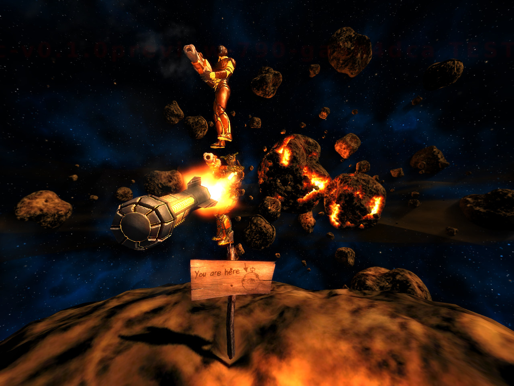

Keep jumping
Movement is defense. Make your path hard to predict.
Xonotic
Xonotic is a free arena FPS with bots, online servers, quick movement, and lots of weapons.
Download Xonotic
Basics
Combat
Movement is defense. Make your path hard to predict.
Rockets can hit enemies near walls and floors.
It is the fastest way to learn aim and weapon timing.